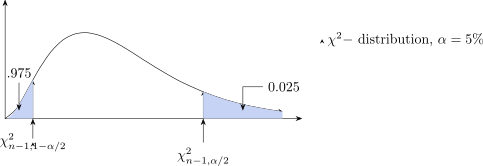
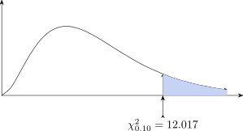
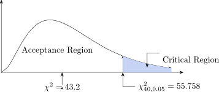

3.2 Test for the Variance and Standard Deviation
When analysing numerical data sometimes you want to draw conclusion about the population variance
on s.d. For example if you are told that in a cereal filling process the population s.d. \(\sigma \) is equal to 15
grams. To see if the variability of the process has changed you need to test whether the s.d. has
changed from the previous specified level of 15 grams.
Assume that the data are normally distributed, you use the \(\chi ^2\) test for the variance \(\sigma \) s.d. to test whether
the population variance is equal to specified value.
Procedure
- Set up the hypothesis.
- Set \(\alpha \)
\(H_0: \sigma ^2 = S^2\)
\(H_1: \sigma ^2\neq S^2\) for two tailed test.
\(H_1:\sigma ^2>S^2\) for the upper one handed test.
\(H_1: \sigma ^2<S^2\) for the lower one handed test. - Test statistic \[\chi ^2=(n-1)\frac {S^2}{\sigma ^2}\]
-
Critical Region

The formula for the hypothesis can easily be converted to form an interval estimate for the variance \[\frac {(n-1)S^2}{\chi ^2_{\alpha /2,n-1}}\leq \sigma ^2\leq \frac {(n-1)S^2}{\chi ^2_{1-\alpha /2,n-1}}\]
Confidence interval for the ratio of variances \[\dfrac {S_1^2}{S^2_2}\,\cdot \,\dfrac {1}{F_{\frac {\alpha }{2},n_1-1,n_2-1}}\leq \dfrac {\sigma ^2_1}{\sigma _2^2}\leq \dfrac {S_1^2}{S_2^2}\,\cdot \, F_{\frac {\alpha }{2},n_2-1,n_1-1}\]
Chi-Square Tests
\(\chi ^2\) distribution
- It has only one parameter, called the degrees of freedom (df)
- The random variable \(\chi ^2\) assumes non negative values only.
- The shape of a Chi-square distribution curve is skewed to the right for small df and becomes symmetric for large df.
- The entire \(\chi ^2\)-distribution curve lies to the right of the vertical axis.
Example
Find the value of \(\chi ^2\) for 7 degrees of freedom and an area of 0.10 in the right tail of the Chi square
distribution curve.
Solution
From the table, locate 7 in the column for df and 0.10 in top row

Example
Find the value of \(\chi ^2\) for 12 degrees of freedom and an area of 0.5 in the left tail of the Chi-square
distribution curve.
Solution
Area in the right tail = \(1 - \) Area in the left \(= 1 - 0.05=0.95\)
Next, we locate 12 in the column for df and 0.950 in the top row \(\chi ^2_{.950,12}=5.226\)
Example
A dairy processing company claims that the variance of the amount of fat in the whole milk processed
by the company is no more than 0.25. You suspect this is wrong and find that a random sample of 41
milk contains has a variance of 0.27. At \(\alpha =5\%\) is this enough evidence to reject the company’s claims?
Assume the population is normally distributed.
Solution
- Set up the hypothesis
\(H_0:\sigma ^2 \leq 0.25\)
\(H_1:\sigma ^2>0.25\)
- Set \(\alpha =5\%\) level of significance.
- Test Statistic
We have \(n=41,\hspace {0.4cm} \sigma ^2=0.25,\hspace {0.4cm} S^2=0.27,\hspace {0.4cm}\) df = 40 \begin {align*} \chi ^2 &=(n-1)\frac {S^2}{\sigma ^2}=\frac {(41-1)(0.27)^2}{(0.25)^2}\\\\ \implies \hspace {0.6cm} \chi ^2 &\approx 43.2\\ \end {align*} -
Critical Region

Interpretation: Our statistic \(\chi ^2=43.2\) is less than the critical value, \(\chi ^2_{0.05}=55.758\). That is our statistic lies in the Acceptance region.
We accept \(H_0\) and reject \(H_1\), that is the company’s claims is true.
Example
A cereal process is set at the s.d. of 15 grams. A sample of 25 packets has a s.d. of 17.7 grams, is there
enough evidence that the process has changed?